Le Burundi, signataire de l'Accord de Paris depuis 2015, adopte sa CDN 3.0 en 2025 afin de consolider les acquis, corriger les faiblesses et relever son ambition pour la réduction des émissions de gaz à effet de serre, tant en atténuation qu'en adaptation. Le processus est piloté par le Ministère de l'Environnement, de l'Agriculture et de l'Élevage, dans un contexte marqué par une grande vulnérabilité aux effets du changement climatique, une forte dépendance agricole (90 % de la population active), une pression foncière élevée, une économie encore émergeante et une démographie dynamique.
La CDN 3.0 du Burundi est un cadre stratégique complet pour la transition vers un développement bas-carbone, résilient et inclusif. Elle articule sur la réduction des émissions, le renforcement de la résilience, la mobilisation des financements innovants et l'intégration sociale, afin de contribuer à bâtir un Burundi durable et prospère en cohérence avec la Vision 2040–2060, le Plan National de Développement 2018-2027 révisé, le PNA initial (2023) et les ODD.
Concernant l'atténuation, le Burundi renforce son engagement face au changement climatique à travers sa Contribution Déterminée au niveau National (CDN3.0), en visant une réduction de 23 % des émissions d'ici 2035 par rapport au scénario de référence (BAU). Cet objectif combine une baisse inconditionnelle de 3 % et conditionnelle de 20 %, appuyée par des financements internationaux et des partenariats solides.
Bien que le pays soit passé à des émissions nettes positives en 2023, il compte sur la restauration du puits forestier à travers l'accroissement du couvert forestier, des politiques coordonnées, des actions cohérentes notamment la promotion des énergies vertes, des technologies bas carbone, un financement renforcé et un système MRV performant pour renouer avec une trajectoire bas-carbone et résiliente.
Le Burundi, au-delà de l'atténuation, réaffirme également son engagement à intégrer plus fortement l'adaptation et la résilience au cœur de la planification et de la budgétisation de son développement aux niveaux national, sectoriel et local. Ceci est conforme avec le processus PNA lancé en 2014 et ayant abouti au PNA initial en 2023 ; ce qui sera poursuivi avec l'élaboration du prochain PNA d'ici 2027.
Le Burundi est fortement exposé aux aléas climatiques, touchant tous les secteurs vitaux : agriculture-élevage-pêche, foresterie, eau, santé, énergie, écosystèmes, infrastructures et déchets.
L'adaptation repose sur cinq piliers majeurs :
L'eau est placée au cœur de l'adaptation, via la gestion intégrée des bassins versants, la préservation des zones tampons, l'irrigation, la gouvernance transfrontalière et les retenues collinaires.
Les mesures d'atténuation visent à :
Les mesures d'adaptation concernent les principaux secteurs suivants :
Le coût global de la mise en œuvre de la CDN 3.0 est estimé à 8 363 913 000 USD, dont 3 943 911 000 USD pour l'adaptation et 4 420 002 000 USD pour l'atténuation.
Les financements proviendront d'un mécanisme mixte : Mécanismes existants de la CCNUCC, Fonds Verts Climat, Fonds d'Adaptation, Fonds Pertes et Dommages, Mécanismes internationaux (FEM, BAD, UE et autres), partenariats public-privé (PPP), marchés carbone, taxes environnementales, coopérations bilatérales, ressources nationales y compris les contributions en nature des populations et mobilisation de la coopération Sud-Sud.
Un dispositif institutionnel intégré est prévu, avec :
L'approche repose sur la planification participative, la coordination multisectorielle et l'alignement avec les politiques nationales (Vision Burundi 2040–2060, PND 2018–2027, ODD, PNA initial 2023). Le prochain PNA (2027) s'alignera sur la CDN 3.0 et contribuera à la CDN 4.0.
La CDN 3.0 place l'humain au centre de sa conception et de sa mise en œuvre :
En lien avec l'engagement accru des jeunes aux actions climatiques, un Programme National d'Alimentation Scolaire (PNAS) sera développé.
Le PNAS agit comme triple levier : Adaptation (sécurité alimentaire, résilience des ménages), Atténuation (réduction du gaspillage du bois et de la dégradation des écosystèmes forestières, foyers améliorés/propres), Capital humain (nutrition, éducation, égalité des genres).
La CDN 3.0 s'aligne sur : Les Objectifs de Développement Durable (ODD) : ODD 1, 2, 3, 5, 6, 7, 8, 9, 11, 12, 13 et 15. Les p nationales : PNA initial (2023) ; Vision Burundi 2040–2060 et Plan National de Développement (PND) révisé. Les accords climatiques mondiaux : CCNUCC, Accord de Paris, REDD+, cadre de Sendai sur la gestion des catastrophes.
AFAT |
Agriculture, Foresterie et Autres Affectations des Terres |
AGR |
Activité(s) Génératrice(s) de Revenus |
AP |
Accord de Paris (sur le climat) |
BAD |
Banque Africaine de Développement |
BAU |
Business As Usual (tendance sans action / scénario tendanciel) |
BEI |
Banque Européenne d'Investissement |
BM |
Banque Mondiale |
BTR |
Biennial Transparency Report → Rapport Biennal de Transparence |
CCNUCC |
Convention-Cadre des Nations Unies sur les Changements Climatiques |
CDN |
Contribution Déterminée au niveau National (NDC) |
CDN 1.0/2.0/3.0 |
1re/2e/3e version de la CDN (2015, 2020, 2025) |
CO₂, CH₄, N₂O |
Dioxyde de carbone, Méthane, Protoxyde d'azote |
COP21/1/CP.21 |
21e Conférence des Parties / décision 1 de la COP21 |
CPDN |
Contribution Prévue Déterminée au niveau National (INDC, avant ratification) |
CTR |
Cadre de Transparence Renforcé |
DGEREA |
Direction Générale de l'Environnement, des Ressources en Eau et de l'Assainissement (Burundi) |
DTM |
Displacement Tracking Matrix → Matrice de Suivi des Déplacements |
E/I |
Ratio Exportations / Importations |
EAH |
Eau, Assainissement et Hygiène (≈ WASH en anglais) |
Eq CO₂/CO₂e |
Équivalent dioxyde de carbone |
FAT |
Foresterie et Autres Affectation des Terres |
FEM |
Fonds pour l'Environnement Mondial (GEF) |
FNUAP |
Fonds des Nations Unies pour la Population (UNFPA) |
FVC |
Fonds Vert pour le Climat (GCF) |
GES |
Gaz à Effet(s) de Serre |
Gg |
Gigagramme (10⁹ g = 1 000 tonnes) |
Gg éq. CO₂ |
Gigagrammes équivalent CO₂ |
GIEC |
Groupe d'Experts Intergouvernemental sur l'Évolution du Climat (IPCC) |
GMES |
Global Monitoring for Environment and Security (aujourd'hui Copernicus) |
GWP |
Potentiel de Réchauffement Global |
HFC-134a/404A/407C/507A/410A/32 |
Hydrofluorocarbures (réfrigérants) |
HuTAC |
Hub régional pour la Transparence de l'Action Climatique |
ICTU |
Informations nécessaires à la Clarté, la Transparence et la Compréhension |
IIB |
Investissement Intérieur Brut |
IGEBU |
Institut Géographique du Burundi |
INSBU |
Institut National de la Statistique du Burundi |
IPCC |
Intergovernmental Panel on Climate Change (GIEC en anglais) |
IOV |
Indicateur Objectivement Vérifiable |
KDMECC |
Kampala Ministerial Declaration on Migration, Environment and Climate Change |
KfW |
Banque de Développement Allemande |
LEAP |
Long-range Energy Alternatives Planning (outil de modélisation énergie) |
MESA |
Monitoring for Environment and Security in Africa |
MINEAGRIE |
Ministère de l'Environnement, de l'Agriculture et de l'Élevage |
MRV/MNV |
Measurement/Monitoring, Reporting/Notification, Verification → Mesure, (Rapportage/Notification), Vérification |
MW |
Mégawatt |
NERF |
Niveau d'Émission de Référence des Forêts / Niveau d'Émissions de Référence Forestière (pour REDD+) |
OBPE |
Office Burundais pour la Protection de l'Environnement |
ODD |
Objectifs de Développement Durable (SDGs) |
OIM |
Organisation Internationale pour les Migration |
PADRI |
Projet d'Appui au Développement de la Recherche et de l'Innovation |
PAP |
Programme d'Actions Prioritaires |
PDNA |
Post Disaster Needs Assessments |
PIB |
Produit Intérieur Brut |
PIUP |
Procédés Industriels et Utilisation des Produits |
PDI |
Personnes Déplacées Internes |
PNA |
Plan National d'Adaptation |
PNAS |
Programme National d'Alimentation Scolaire |
PND |
Plan National de Développement |
PNUD |
Programme des Nations Unies pour le Développement |
PPP |
Partenariat Public-Privé |
PUMA |
Preparation for the Use of Meteosat in Africa |
REDD+ |
Réduction des Émissions dues à la Déforestation et à la Dégradation des forêts (+ conservation, gestion durable, accroissement des stocks) |
SEA |
Système de Suivi-Évaluation et d'Apprentissage |
SFN |
Solutions Fondées sur la Nature |
tCO₂/an |
tonnes de CO₂ par an |
UNICEF |
Fonds des Nations Unies pour l'Enfance |
USD |
United States Dollar (Dollar des États-Unis) |
VBG |
Violences Basées sur le Genre |
VIH/SIDA |
Virus de l'Immunodéficience Humaine / Syndrome d'Immunodéficience Acquise |
Éléments ICTU |
CDN 3.0 |
|||||||||||||||||||||||||||||||||||||||||||||||||
Type d'engagement |
La CDN 3.0 renforce les engagements ambitieux du Burundi en mettant un accent sur l'atténuation et l'adaptation. Elle met en exergue les contributions avec mesures existantes (financées par les ressources nationales) et les contributions avec mesures additionnelles, avec des appuis internationaux et qui correspondent aux mesures conditionnelles. Le Burundi renforce les ambitions initialement prises dans la CDN 2.0. |
|||||||||||||||||||||||||||||||||||||||||||||||||
Périmètre |
La CDN 3.0 actualise l'année de référence de 2015, conformément au Premier Rapport Biennal de Transparence (2025) et à la quatrième Communication Nationale Renforcée (CTR). Cette mise à jour améliore la robustesse des données et leur compatibilité avec le Cadre de Transparence Renforcé (CTR). |
|||||||||||||||||||||||||||||||||||||||||||||||||
Année de référence |
2015 |
|||||||||||||||||||||||||||||||||||||||||||||||||
Période d'engagement |
La CDN 3.0 a maintenu les niveaux de réduction des émissions de 3% avec mesures et de 20% avec mesures additionnelles. Couverture : 2025-2035, alignées sur la Vision Burundi pays émergent 2040 et pays développé en 2060. |
|||||||||||||||||||||||||||||||||||||||||||||||||
Niveau de réduction |
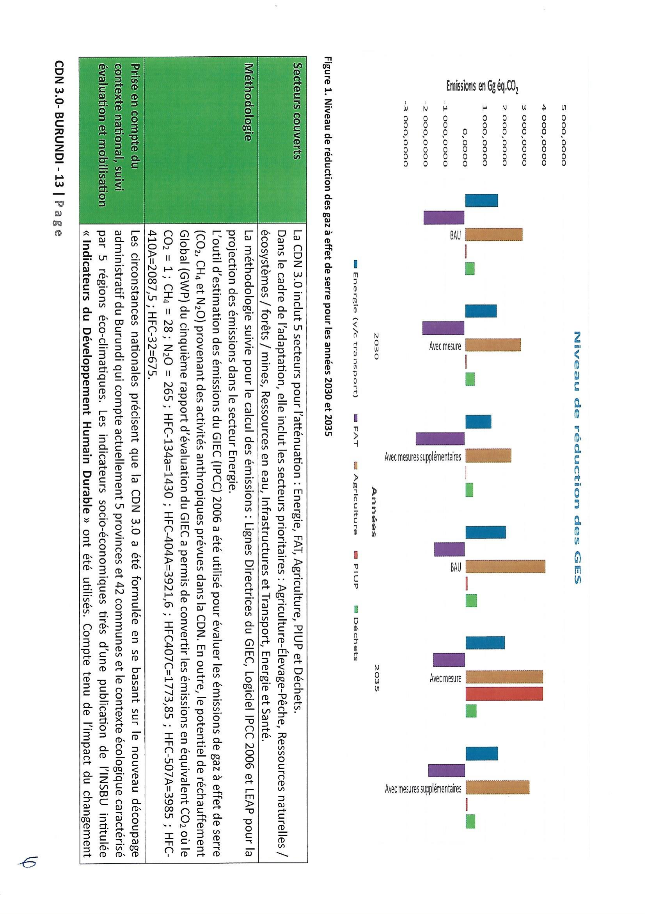 Figure 1. Niveau de réduction des gaz à effet de serre pour les années 2030 et 2035
|
|||||||||||||||||||||||||||||||||||||||||||||||||
Secteurs couverts |
La CDN 3.0 inclut 5 secteurs pour l'atténuation : Energie, FAT, Agriculture, PIUP et Déchets. Les secteurs d'adaptation prioritaires : Agriculture-Elevage-Pêche, Ressources naturelles/écosystèmes/forêts/mines, Ressources en eau, Energie et Santé. |
|||||||||||||||||||||||||||||||||||||||||||||||||
Méthodologie |
La méthodologie suivie pour le calcul des émissions : Lignes Directrices du GIEC, Logiciel IPCC 2006 et LEAP pour la projection des émissions dans le secteur Energie. L'outil d'estimation des émissions du GIEC (IPCC) 2006 a été utilisé pour évaluer les émissions de gaz à effet de serre provenant des activités anthropiques prévues dans la CDN. En outre, le potentiel de réchauffement global (GWP) du cinquième rapport d'évaluation du GIEC a permis de convertir les émissions en équivalent CO₂ où le CO₂=1 ; CH₄=28 ; N₂O=265 ; HFC-134a=1430 ; HFC-404A=3921,6 ; HFC-407C=1773,85 ; HFC-507A=3985 ; HFC-410A=2087,5 ; HFC-32=675. |
|||||||||||||||||||||||||||||||||||||||||||||||||
Prise en compte du contexte national, suivi évaluation et mobilisation |
Les circonstances nationales précisent que la CDN 3.0 a été formulée en se basant sur le nouveau découpage administratif du Burundi qui compte actuellement 5 provinces et 42 communes et le contexte écologique caractérisé par 5 régions éco-climatiques. Les indicateurs socio-économiques tirés d'une publication de l'INSBU intitulée "Indicateurs du Développement Humain Durable" ont été utilisés. Compte tenu de l'impact du changement climatique sur la santé, le profil épidémiologique et sanitaire du pays a été évoqué et il est caractérisé par la récurrence des épidémies comme le paludisme, le choléra, la tuberculose, la rougeole ainsi que la prévalence du VIH/SIDA et la malnutrition dans certaines communes du pays. Le profil de risque met en exergue l'impact des catastrophes sur les populations et les infrastructures avec des chiffres de 2018 à 2025 et précise les principaux facteurs de vulnérabilité. Les Cadres d'orientation politique, juridique et réglementaire montrent plusieurs cadres juridiques et réglementaires mis en place tout en précisant les dispositifs institutionnels permettant d'aborder les enjeux et défis liés à l'adaptation au changement climatique. |
|||||||||||||||||||||||||||||||||||||||||||||||||
Hypothèse des projections |
Pour le secteur Energie, les hypothèses de projections sont basées sur le taux d'accroissement de la population, la croissance économique (PIB), les mesures d'orientation politiques et stratégiques du Pays relatives au développement socioéconomique et environnemental. Pour le Secteur Agriculture, les paramètres essentiels comprennent les facteurs d'expansion de la biomasse, les ratios carbone/biomasse, les taux de croissance annuelle de la biomasse forestière et les facteurs d'émission spécifiques pour les différents types de forêts, les données de la cartographie de l'occupation du sol fournissant les données d'activités nécessaires pour les calculs. Pour le Secteur FAT, les paramètres essentiels comprennent les facteurs d'expansion de la biomasse, les ratios carbone/biomasse ainsi que les données d'activités de l'année de référence. Pour les Procédés Industriels et Utilisation des Produits (PIUP), les hypothèses de projections sont basées sur la croissance économique et le taux d'industrialisation. Pour le Secteur Déchet, les hypothèses et paramètres du scénario de référence de la TCN pour 2025 et 2030 ont été retenus. Les hypothèses de projection sont basées sur le taux de croissance de la population, de l'économie nationale et de l'urbanisation. |
|||||||||||||||||||||||||||||||||||||||||||||||||
Suivi évaluation et apprentissage |
Le Système national MRV (Mesure, Notification, Vérification) est renforcé pour suivre la mise en œuvre des mesures d'atténuation (GES) et d'adaptation (indicateurs de résilience). Le renforcement des capacités institutionnelles pour assurer une transition efficace vers une économie à faible émission de carbone et résiliente est essentielle. La mise en œuvre de la CDN 3.0 du Burundi nécessite de mobiliser les ressources nationales, les financements externes, l'innovation domestique et le renforcement des capacités adéquates. Le Premier Rapport Biennal de Transparence (2025) est renforcé et le Système national MRV contribue à la transparence de l'action climatique. |
|||||||||||||||||||||||||||||||||||||||||||||||||
En quoi la CDN 3.0 est ambitieuse et innovatrice ? |
La CDN 3.0 est ambitieuse et novatrice : malgré la perte progressive de la capacité d'absorption du Burundi, elle vise à renforcer les mesures d'atténuation, à accroître le puits de carbone et propose beaucoup d'actions d'adaptation qui sont dans les priorités nationales. Elle a mis en exergue plusieurs aspects transversaux comme le genre, les femmes, des jeunes, des enfants et des personnes vivant avec handicap et le lien entre la mobilité humaine, l'environnement et le changement climatique. Les impacts des catastrophes (pluies torrentielles, inondations, grêle, glissements de terrain, vents violents), sur les populations et les infrastructures (routes, bâtiments, maisons d'habitation et écoles) ont été identifiés et les mesures pour y faire face ont été proposées. |
Durant la 21ème Conférence des Parties de la Convention des Nations Unies sur les changements climatiques tenue à Paris le 12 Décembre 2015, les pays « Parties » ont signé un accord visant à mettre en place un accord cadre pour assurer un avenir sobre en carbone. En application à l'article 3 de l'Accord de Paris, les pays ont pris la résolution de soumettre leurs engagements à travers les Contributions Déterminées au niveau National tous les cinq ans.
Dans ce cadre, comme la plupart des pays, le Burundi a soumis au Secrétariat de la Convention Cadre des Nations Unies sur les changements climatiques la Contribution Prévue Déterminée au niveau National (CPDN) en 2015 (CDN 1.0), devenue CDN en 2018, et la deuxième génération de CDN en 2021 (CDN 2.0).
A travers la présentation de la CDN 3.0, le Burundi s'engage à consolider les acquis et les leçons apprises issues de la mise en œuvre des engagements pris dans les CDN précédentes tout en augmentant les cibles et les actions visant à adresser les causes des émissions (à travers l'atténuation) ainsi que les conséquences et les impacts des changements climatiques (à travers l'adaptation). Une attention particulière sera portée sur les actions sobres en carbone.
Le présent document est articulé autour de neuf sections :
Les annexes comprennent entre autres la liste des documents consultés et les projets en cours et engagés dans le cadre de l'initiative COMPACT.
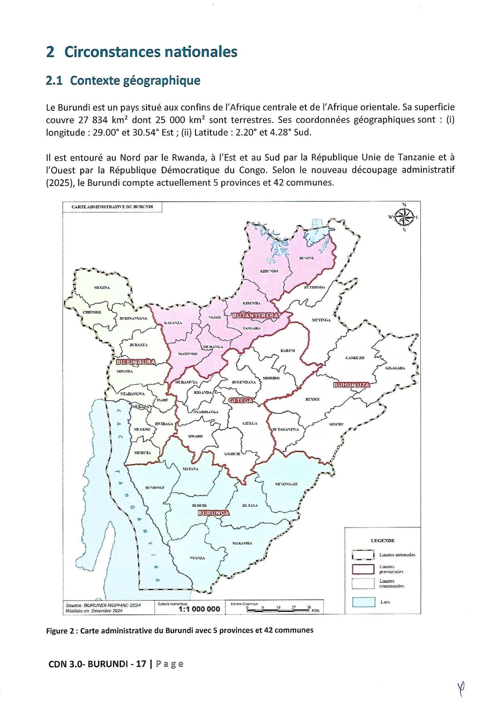
Le Burundi est un pays enclavé d'Afrique centrale situé entre 2°20' et 4°27' de latitude Sud et entre 28°50' et 30°53' de longitude Est. Le pays partage ses frontières avec la République Démocratique du Congo à l'Ouest, la République du Rwanda au Nord et la République Unie de Tanzanie à l'Est et au Sud. Le pays s'étend sur une superficie d'environ 27 834 km². Le relief est caractérisé par une crête Congo-Nil qui divise le pays en deux versants : à l'Ouest, le versant du lac Tanganyika avec ses plaines côtières et les dépressions du Nord-Ouest et à l'Est, le versant des bassins du Nil avec les plateaux centraux et les dépressions orientales. Le nouveau découpage administratif du Burundi compte actuellement 5 provinces et 42 communes.
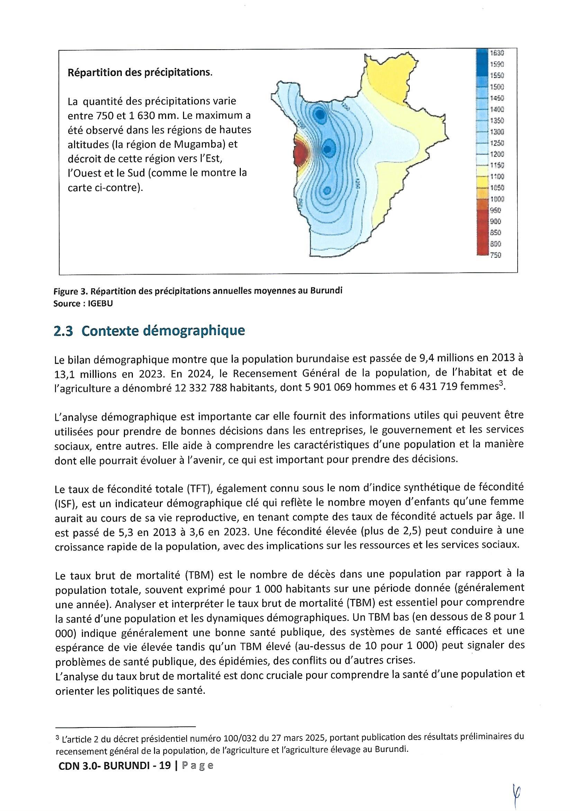
Le contexte écologique est caractérisé par 5 régions éco-climatiques. Les précipitations annuelles moyennes varient de moins de 750 mm dans la dépression du lac Tanganyika et les dépressions orientales à plus de 1 700 mm sur la crête Congo-Nil. Les températures moyennes annuelles varient entre 17°C et 23°C selon l'altitude.
Le Burundi dispose d'une diversité écologique importante comprenant différents types d'occupation des terres. L'agriculture constitue la principale utilisation des terres avec 2 017 281 ha.1 Le pays abrite également des forêts, des zones humides, des prairies, des lacs et cours d'eau, des zones de mines et carrières, des zones urbaines et des établissements humains (34 786 ha).2
Le pays est traversé par de nombreux cours d'eau dont les principaux sont la Rusizi, la Malagarazi, la Ruvubu et la Kagera. Le lac Tanganyika, l'un des plus profonds du monde avec 773 m, constitue une ressource naturelle majeure pour le pays. Les écosystèmes forestiers jouent un rôle crucial dans la régulation climatique, la conservation de la biodiversité et la protection des bassins versants.
Le bilan démographique montre que la population burundaise est passée de 9,4 millions en 2013 à 13,1 millions en 2023. En 2024, le Recensement Général de la population, de l'habitat et de l'agriculture a dénombré 12 332 788 habitants, dont 5 901 069 hommes et 6 431 719 femmes.
L'analyse démographique est importante car elle fournit des informations utiles qui peuvent être utilisées pour prendre de bonnes décisions dans les entreprises, le gouvernement et les services sociaux, entre autres. Elle aide à comprendre les caractéristiques d'une population et la manière dont elle pourrait évoluer à l'avenir, ce qui est important pour prendre des décisions.
Le taux de fécondité totale (TFT), également connu sous le nom d'indice synthétique de fécondité (ISF), est un indicateur démographique clé qui reflète le nombre moyen d'enfants qu'une femme aurait au cours de sa vie reproductive, en tenant compte des taux de fécondité actuels par âge. Il est passé de 5,3 en 2013 à 3,6 en 2023. Une fécondité élevée (plus de 2,5) peut conduire à une croissance rapide de la population, avec des implications sur les ressources et les services sociaux.
Le taux brut de mortalité (TBM) est le nombre de décès dans une population par rapport à la population totale, souvent exprimé pour 1 000 habitants sur une période donnée (généralement une année). Analyser et interpréter le taux brut de mortalité (TBM) est essentiel pour comprendre la santé d'une population et les dynamiques démographiques. Un TBM bas (en dessous de 8 pour 1 000) indique généralement une bonne santé publique, des systèmes de santé efficaces et une espérance de vie élevée tandis qu'un TBM élevé (au-dessus de 10 pour 1 000) peut signaler des problèmes de santé publique, des épidémies, des conflits ou d'autres crises. L'analyse du taux brut de mortalité est donc cruciale pour comprendre la santé d'une population et orienter les politiques de santé.
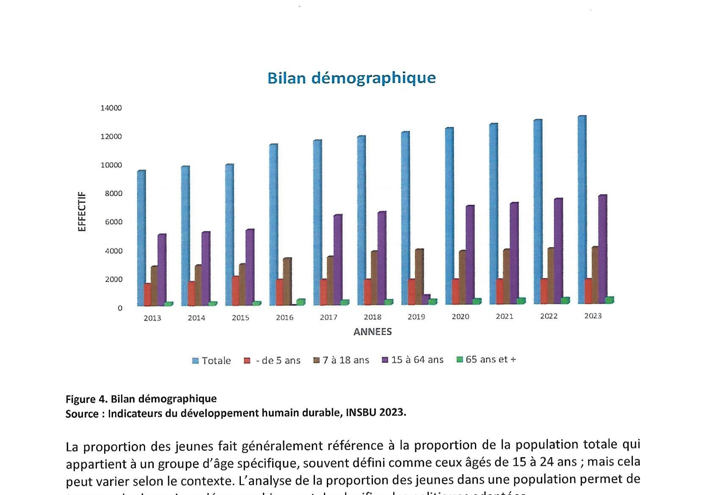
La proportion des jeunes fait généralement référence à la proportion de la population totale qui appartient à un groupe d'âge spécifique, souvent défini comme ceux âgés de 15 à 24 ans ; mais cela peut varier selon le contexte. L'analyse de la proportion des jeunes dans une population permet de comprendre les enjeux démographiques et de planifier des politiques adaptées.
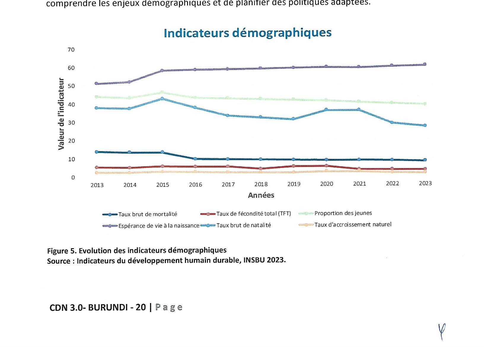
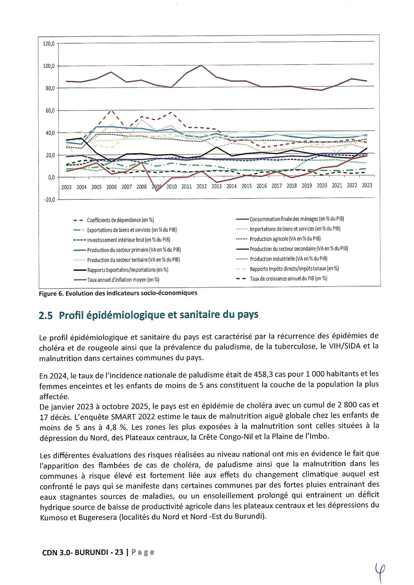
Le Burundi est l'un des pays les plus pauvres du monde. L'économie est essentiellement agricole, avec environ 90 % de la population active dans ce secteur. Le Produit Intérieur Brut (PIB) par habitant reste très faible. Les principales exportations comprennent le café, le thé, le coton et les minerais. Le pays fait face à une forte pression foncière, un taux de chômage élevé chez les jeunes, et une dépendance aux importations pour les produits pétroliers et industriels.
Le profil épidémiologique et sanitaire du pays est caractérisé par la récurrence des épidémies de choléra et de rougeole ainsi que la prévalence du paludisme, de la tuberculose, le VIH/SIDA et la malnutrition dans certaines communes du pays.
En 2024, le taux de l'incidence nationale de paludisme était de 458,3 cas pour 1 000 habitants et les femmes enceintes et les enfants de moins de 5 ans constituent la couche de la population la plus affectée. De janvier 2023 à octobre 2025, le pays est en épidémie de choléra avec un cumul de 2 800 cas et 17 décès. L'enquête SMART 2022 estime le taux de malnutrition aiguë globale chez les enfants de moins de 5 ans à 4,8 %. Les zones les plus exposées à la malnutrition sont celles situées à la dépression du Nord, des Plateaux centraux, la Crête Congo-Nil et la Plaine de l'Imbo.
Les différentes évaluations des risques réalisées au niveau national ont mis en évidence le fait que l'apparition des flambées de cas de choléra, de paludisme ainsi que la malnutrition dans les communes à risque élevé est fortement liée aux effets du changement climatique auquel est confronté le pays qui se manifeste dans certaines communes par des fortes pluies entrainant des eaux stagnantes sources de maladies, ou un ensoleillement prolongé qui entrainent un déficit hydrique source de baisse de productivité agricole dans les plateaux centraux et les dépressions du Kumoso et Bugeresera (localités du Nord et Nord-Est du Burundi).
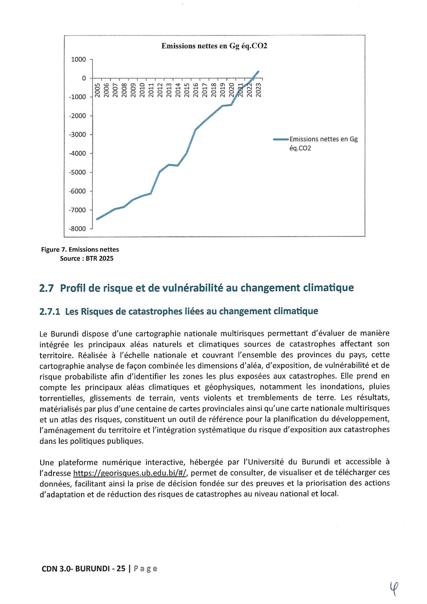
Le profil des émissions de gaz à effet de serre du Burundi est dominé par les secteurs Agriculture et FAT (Foresterie et Autres Affectations des Terres), qui représentent la part la plus importante des émissions nationales. Le secteur Énergie connaît une croissance rapide en lien avec le développement économique et la croissance démographique. Les émissions nettes du Burundi sont passées de négatives à positives en 2023, traduisant une réduction de la capacité d'absorption forestière.
Le Burundi dispose d'une cartographie nationale multirisques permettant d'évaluer de manière intégrée les principaux aléas naturels et climatiques sources de catastrophes affectant son territoire. Réalisée à l'échelle nationale et couvrant l'ensemble des provinces du pays, cette cartographie analyse de façon combinée les dimensions d'aléa, d'exposition, de vulnérabilité et de risque probabiliste afin d'identifier les zones les plus exposées aux catastrophes. Elle prend en compte les principaux aléas climatiques et géophysiques, notamment les inondations, pluies torrentielles, glissements de terrain, vents violents et tremblements de terre. Les résultats, matérialisés par plus d'une centaine de cartes provinciales ainsi qu'une carte nationale multirisques et un atlas des risques, constituent un outil de référence pour la planification du développement, l'aménagement du territoire et l'intégration systématique du risque d'exposition aux catastrophes dans les politiques publiques.
Une plateforme numérique interactive, hébergée par l'Université du Burundi et accessible à l'adresse https://georisques.ub.edu.bi/#/, permet de consulter, de visualiser et de télécharger ces données, facilitant ainsi la prise de décision fondée sur des preuves et la priorisation des actions d'adaptation et de réduction des risques de catastrophes au niveau national et local.
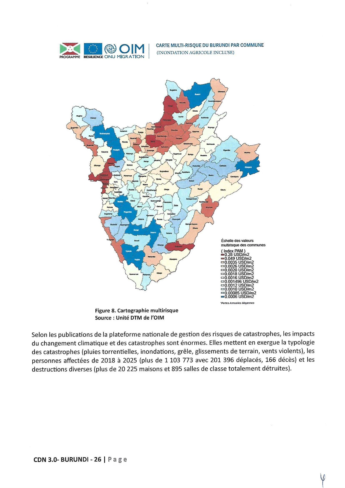
Selon les publications de la plateforme nationale de gestion des risques de catastrophes, les impacts du changement climatique et des catastrophes sont énormes. Elles mettent en exergue la typologie des catastrophes (pluies torrentielles, inondations, grêle, glissements de terrain, vents violents), les personnes affectées de 2018 à 2025 (plus de 1 103 773 avec 201 396 déplacés, 166 décès) et les destructions diverses (plus de 20 225 maisons et 895 salles de classe totalement détruites).
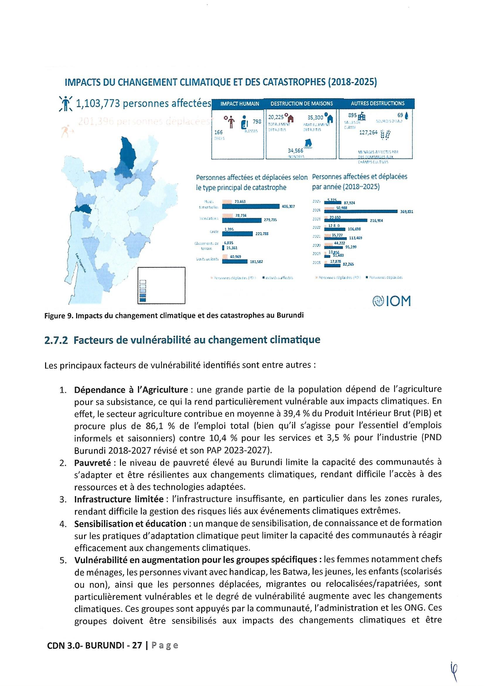
Le Burundi est exposé à de multiples risques climatiques : pluies torrentielles, inondations, grêle, glissements de terrain et vents violents. Ces phénomènes ont des impacts significatifs sur les populations et les infrastructures (routes, bâtiments, maisons d'habitation et écoles). Les données de 2018 à 2025 documentent l'ampleur croissante de ces catastrophes et leurs conséquences humanitaires.
Les principaux facteurs de vulnérabilité identifiés sont entre autres :
Le Burundi s'est doté de plusieurs cadres juridiques et réglementaires pour aborder les enjeux climatiques. Ces cadres comprennent les textes de loi environnementaux nationaux, les politiques sectorielles (agriculture, énergie, forêts, eau) et les stratégies nationales de développement. Le cadre légal de la CDN 3.0 s'appuie notamment sur les dispositions constitutionnelles et les lois environnementales en vigueur, renforcées par les conventions internationales ratifiées par le Burundi (CCNUCC, Convention sur la Diversité Biologique, Convention des Nations Unies sur la lutte contre la désertification).
La Vision Burundi pays émergent 2040 et pays développé en 2060, le Plan National de Développement (PND) 2018-2027 révisé, le Plan National d'Adaptation initial (2023) et les stratégies sectorielles constituent les piliers de l'alignement politique de la CDN 3.0.
Le Ministère de l'Environnement, de l'Agriculture et de l'Élevage (MINEAGRIE) est l'institution de tutelle pour la mise en œuvre de la CDN 3.0 et coordonne les actions interministérielles. Le cadre institutionnel comprend :
La CDN 1.0 (2015) et la CDN 2.0 (2021) ont permis au Burundi de poser les bases de son engagement climatique. L'évaluation de la mise en œuvre de ces engagements a révélé un taux de réalisation d'environ 40 % pour la CDN 1.0, principalement en raison des contraintes financières et des défis institutionnels. Les principaux enseignements comprennent la nécessité d'un meilleur ancrage institutionnel, d'une mobilisation plus importante de financements climatiques, et d'une meilleure intégration des communautés locales dans la planification et la mise en œuvre des mesures.
L'élaboration de la CDN 3.0 a été conduite selon un processus participatif et inclusif. Ce processus a impliqué des consultations avec les parties prenantes au niveau national et local, notamment à travers des ateliers régionaux. Des ateliers régionaux ont été organisés dans les différentes régions du pays, impliquant plus de 426 participants représentant les ministères sectoriels, les collectivités locales, la société civile, le secteur privé, les organisations de jeunes et les groupes vulnérables (femmes, personnes handicapées, peuples autochtones). Les consultations ont permis de collecter les priorités sectorielles et locales en matière d'atténuation et d'adaptation.
L'élaboration de la CDN 3.0 a bénéficié d'un renforcement des capacités techniques grâce à des formations sur les outils de modélisation des émissions de GES, notamment sur le logiciel GACMO, organisées en collaboration avec le Hub Régional sur la Transparence Climatique en Afrique Centrale (HuTAC).4 Les consultants nationaux ont également été formés sur les méthodes du GIEC pour l'inventaire des GES et sur les approches participatives de planification de l'adaptation.
L'inventaire national des GES du Burundi couvre cinq secteurs : Énergie (y compris transport), Procédés Industriels et Utilisation des Produits (PIUP), Agriculture, Foresterie et Autres Affectations des Terres (FAT), et Déchets. L'année de référence est 2015 conformément au Premier Rapport Biennal de Transparence (BTR 2025).
Les tendances des émissions montrent l'importance des émissions dues à la consommation d'énergie par le secteur transport et par les autres industries.
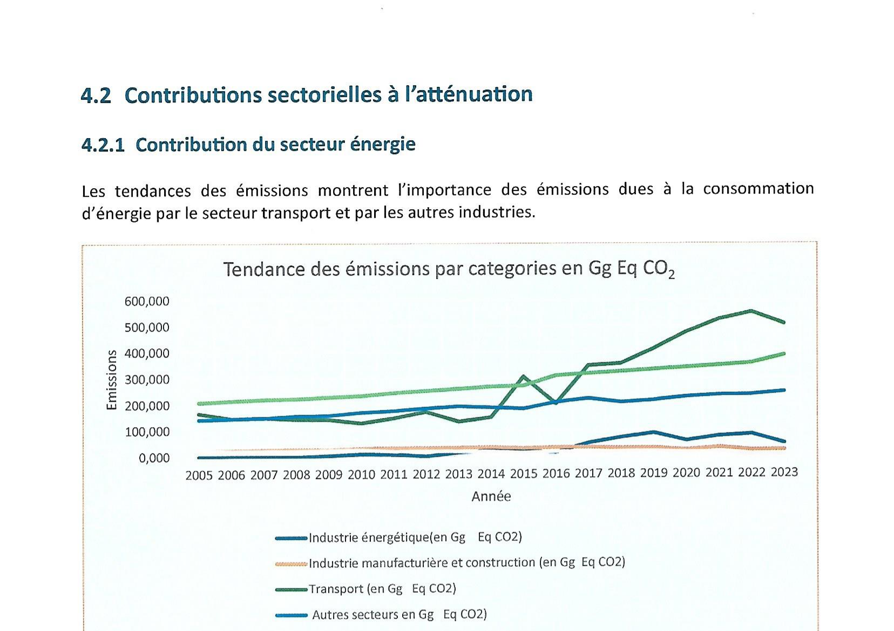
Le bois énergie est le plus grand contributeur au bilan énergétique national et le pays prend des dispositions nécessaires pour en tenir compte dans toutes les stratégies nationales.
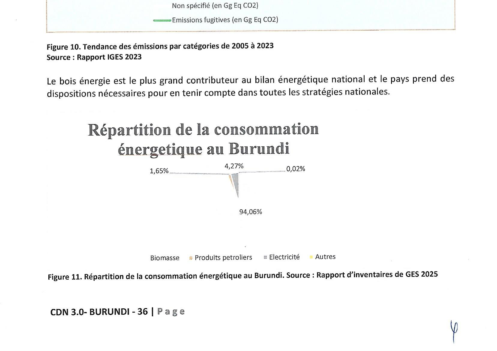
La réduction des émissions en 2030 est de 49,5420 Gg éq.CO₂ avec mesures et de 330,2800 Gg éq.CO₂ avec mesures supplémentaires. En 2035, elle sera de 61,2920 Gg éq.CO₂ avec mesures et de 408,6100 avec mesures additionnelles ; Le secteur de l'Énergie reste le 2ème secteur le plus émetteur derrière le secteur Agriculture.
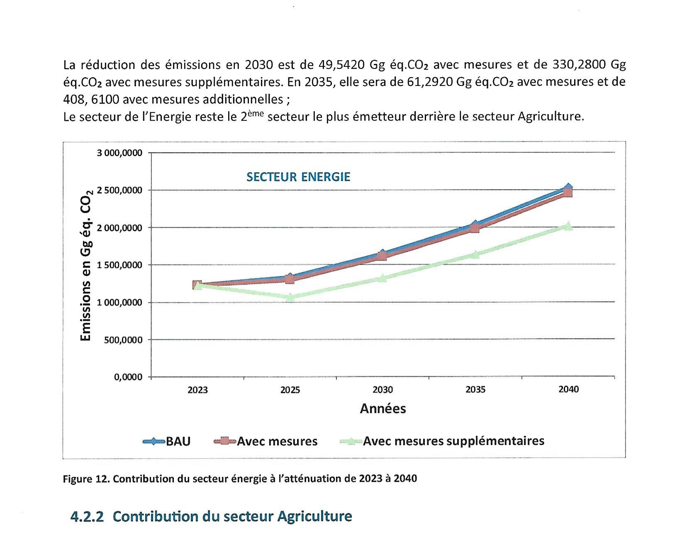
Comme la figure 13 le montre, les principales sources d'émissions de gaz à effet de serre sont classées par ordre décroissant comme suit : la fermentation entérique des ruminants, (40 pour cent en équivalent CO₂) les déjections laissées sur les pâturages (16 pour cent), les engrais de synthèse (12 pour cent) et la riziculture (10 pour cent).
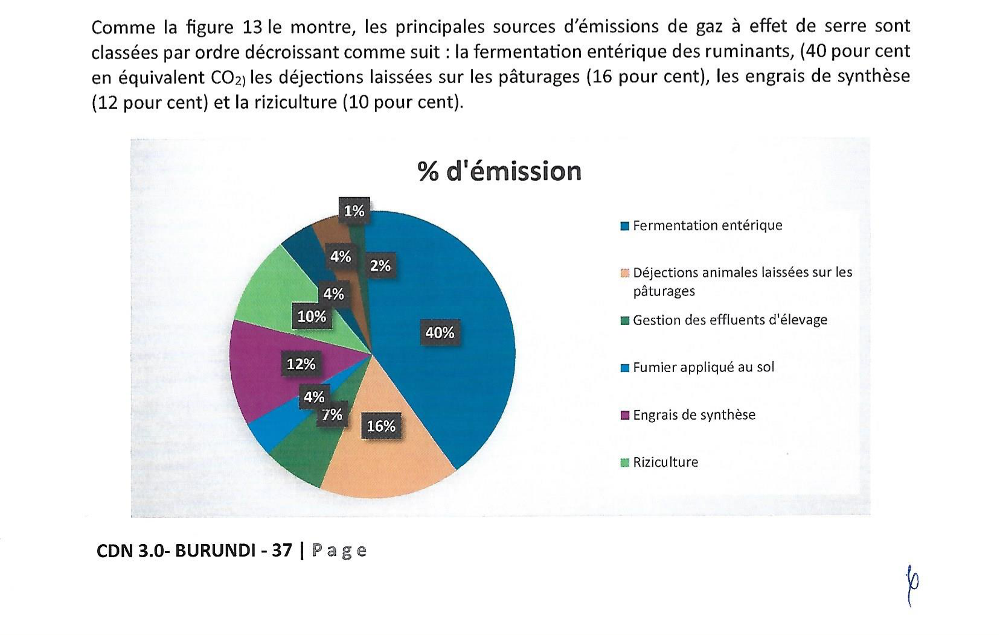
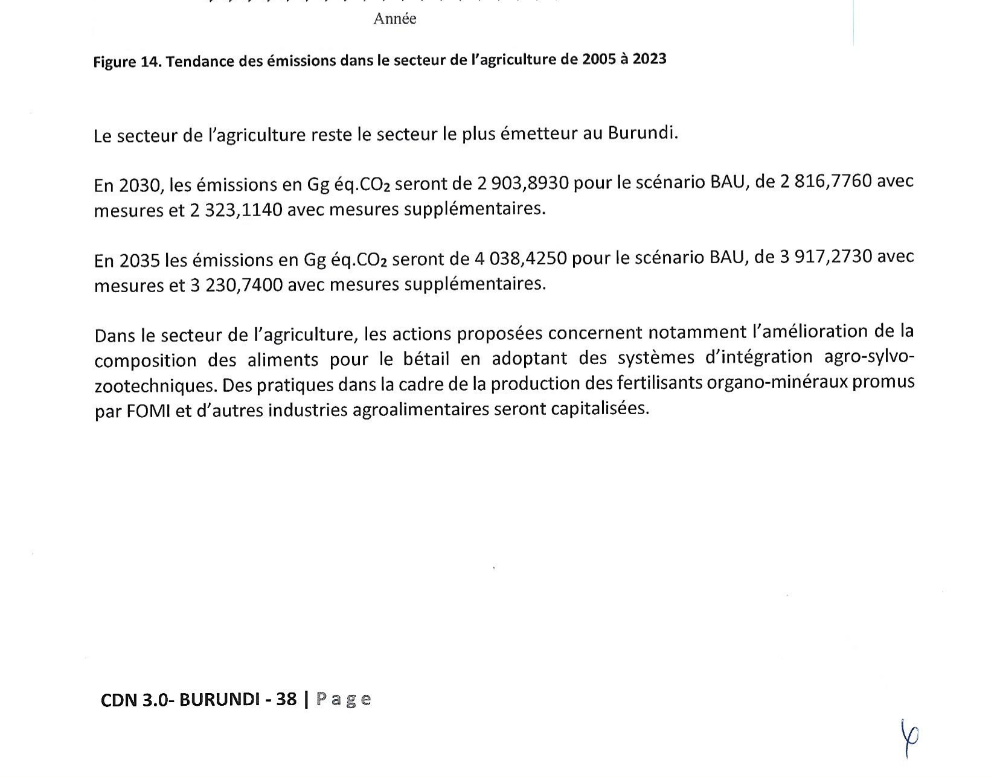
Le secteur de l'agriculture reste le secteur le plus émetteur au Burundi.
En 2030, les émissions en Gg éq.CO₂ seront de 2 903,8930 pour le scénario BAU, de 2 816,7760 avec mesures et 2 323,1140 avec mesures supplémentaires.
En 2035 les émissions en Gg éq.CO₂ seront de 4 038,4250 pour le scénario BAU, de 3 917,2730 avec mesures et 3 230,7400 avec mesures supplémentaires.
Dans le secteur de l'agriculture, les actions proposées concernent notamment l'amélioration de la composition des aliments pour le bétail en adoptant des systèmes d'intégration agro-sylvo-zootechniques. Des pratiques dans le cadre de la production des fertilisants organo-minéraux promus par FOMI et d'autres industries agroalimentaires seront capitalisées.
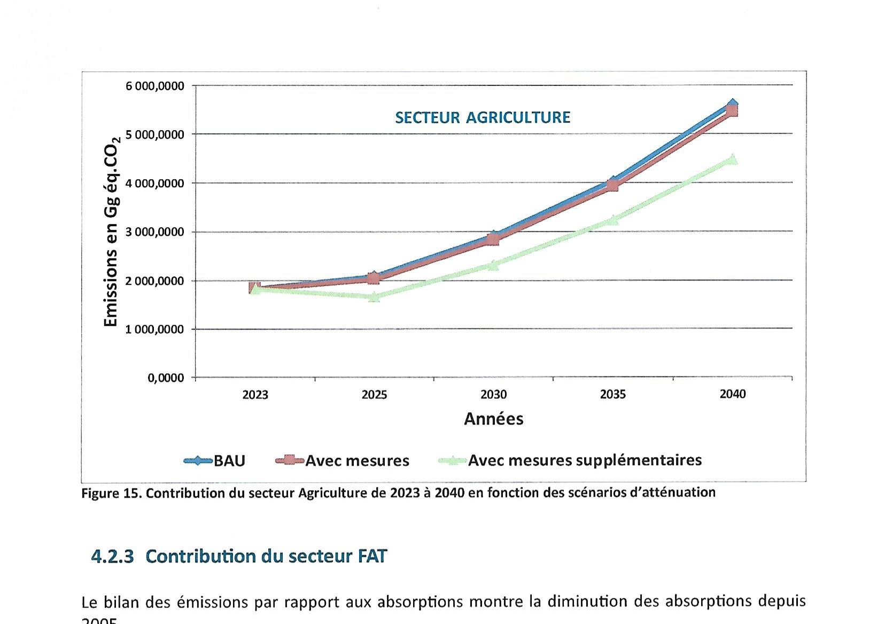
Le bilan des émissions par rapport aux absorptions montre la diminution des absorptions depuis 2005.
Comme le montre la figure 16, la capacité d'absorption a tendance à diminuer et le pays tend à être émetteur.
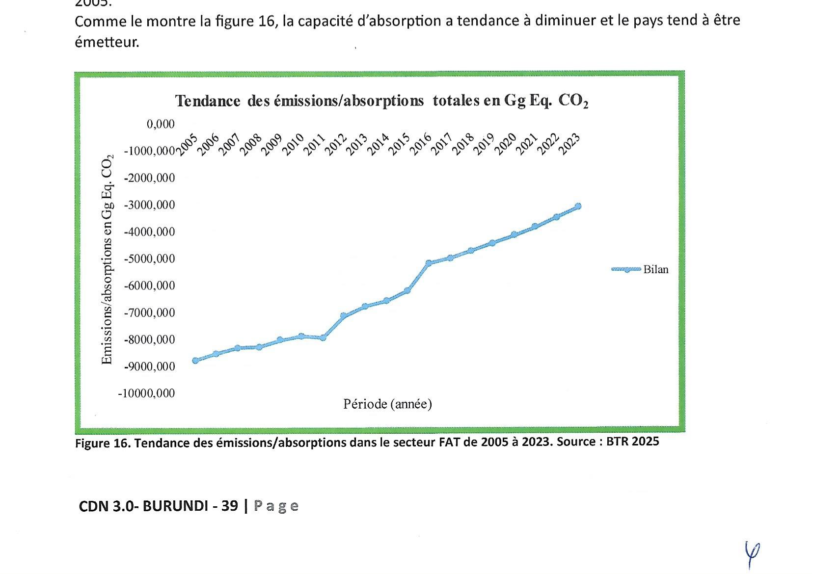
En 2030, la capacité d'absorption en Gg éq.CO₂ sera de -2 094,4160 pour le scénario BAU, de -2 157,2480 avec mesures et -2 513,2990 avec mesures supplémentaires.
En 2035, la capacité d'absorption en Gg éq.CO₂ sera de -1 571,1630 pour le scénario BAU, de -1 618,2970 avec mesures et -1 885,3950 avec mesures supplémentaires.
Pour augmenter la capacité d'absorption, le Burundi a fait des efforts dans le cadre de l'augmentation de la couverture forestière du pays grâce à ses efforts et à l'appui de plusieurs partenaires dans ce secteur à travers plusieurs projets. À côté de ces plantations forestières domaniales et communales, des micro-boisements privés ou communautaires ont été installés.
Les arbres agroforestiers diffusés en milieu rural sont constitués essentiellement d'espèces suivantes : Grevillea robusta, Maesopsiseminii, Markhamia lutea, Cedrela odorata, Acacia mangium, cassia siama, avocatiers, Artocarpus sp, bambous vulgaris, …) ainsi que des arbustes fourragers (Calliandra calothyrsus, leucena leucocephala). Ces espèces forestières, agroforestières et fruitières servent non seulement à la séquestration du carbone, mais aussi à la protection des sols contre l'érosion, l'amélioration de la fertilité des sols, l'alimentation animale et humaine.
Le Ministère en charge de l'environnement, de l'agriculture et de l'élevage a mis dans ses priorités le reboisement des massifs montagneux surplombant les dépressions orientales de Kumoso et dans les autres zones éco-climatiques, le développement de la foresterie rurale, la réhabilitation des milieux dégradés dans le bassin du Congo et le Bugesera.
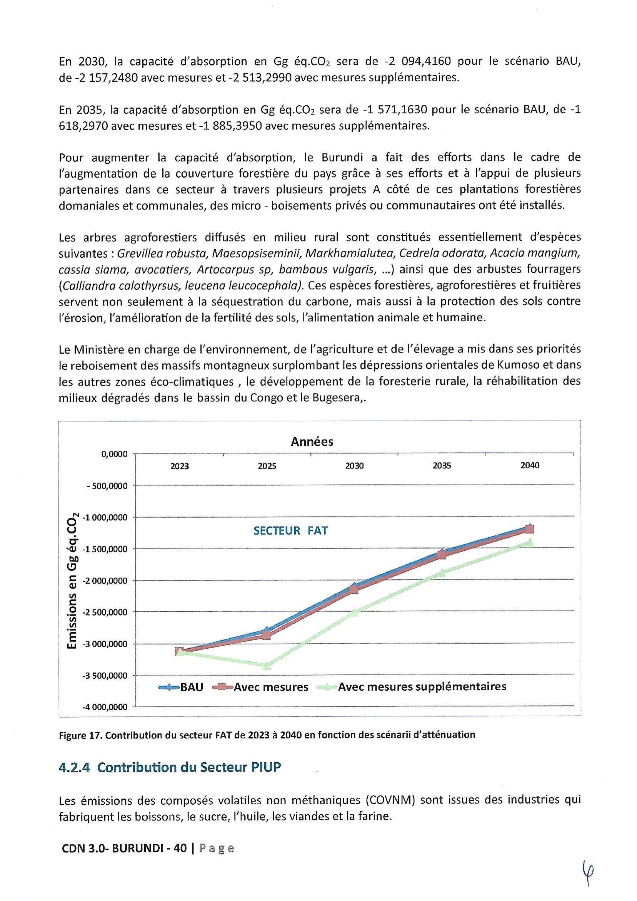
Les émissions des composés volatiles non méthaniques (COVNM) sont issues des industries qui fabriquent les boissons, le sucre, l'huile, les viandes et la farine.
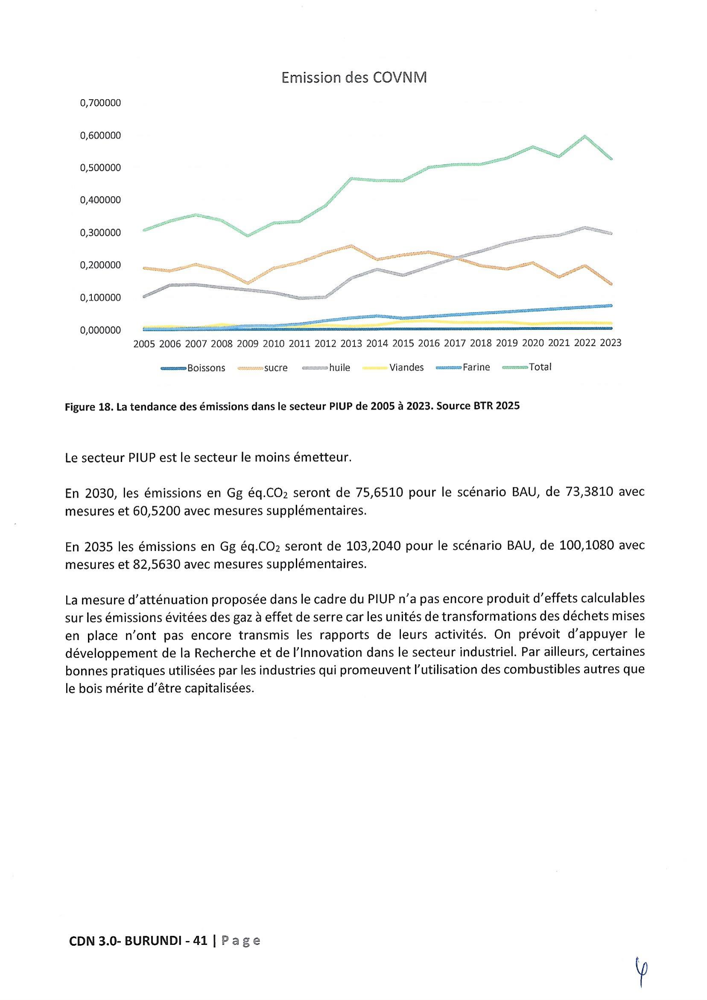
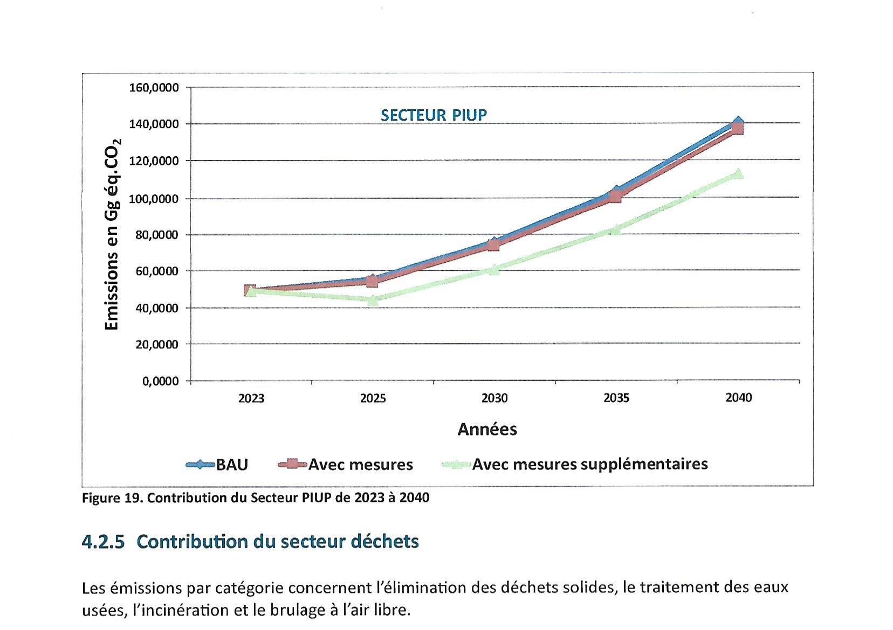
Le secteur PIUP est le secteur le moins émetteur.
En 2030, les émissions en Gg éq.CO₂ seront de 75,6510 pour le scénario BAU, de 73,3810 avec mesures et 60,5200 avec mesures supplémentaires.
En 2035 les émissions en Gg éq.CO₂ seront de 103,2040 pour le scénario BAU, de 100,1080 avec mesures et 82,5630 avec mesures supplémentaires.
La mesure d'atténuation proposée dans le cadre du PIUP n'a pas encore produit d'effets calculables sur les émissions évitées des gaz à effet de serre car les unités de transformations des déchets mises en place n'ont pas encore transmis les rapports de leurs activités. On prévoit d'appuyer le développement de la Recherche et de l'Innovation dans le secteur industriel. Par ailleurs, certaines bonnes pratiques utilisées par les industries qui promeuvent l'utilisation des combustibles autres que le bois mérite d'être capitalisées.
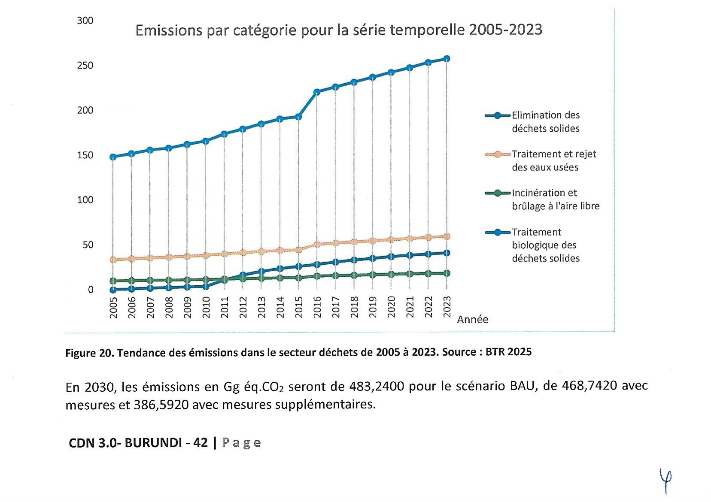
En 2030, les émissions en Gg éq.CO₂ seront de 483,2400 pour le scénario BAU, de 468,7420 avec mesures et 386,5920 avec mesures supplémentaires.
En 2035, les émissions en Gg éq.CO₂ seront de 581,3700 pour le scénario BAU, de 563,9290 avec mesures et 465,0960 avec mesures supplémentaires.
La mesure proposée est « la valorisation des déchets urbains » comme mesure d'atténuation. Les consultations provinciales ont insisté sur cet aspect.
Des mesures additionnelles ont été proposées comme le développement de l'économie circulaire valorisant les déchets, les bonnes pratiques pour promouvoir les autres combustibles comme les briquettes sous forme d'énergie.
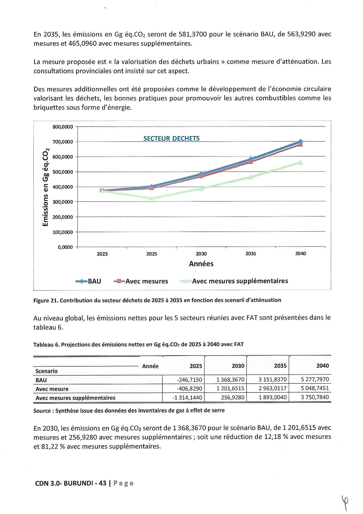
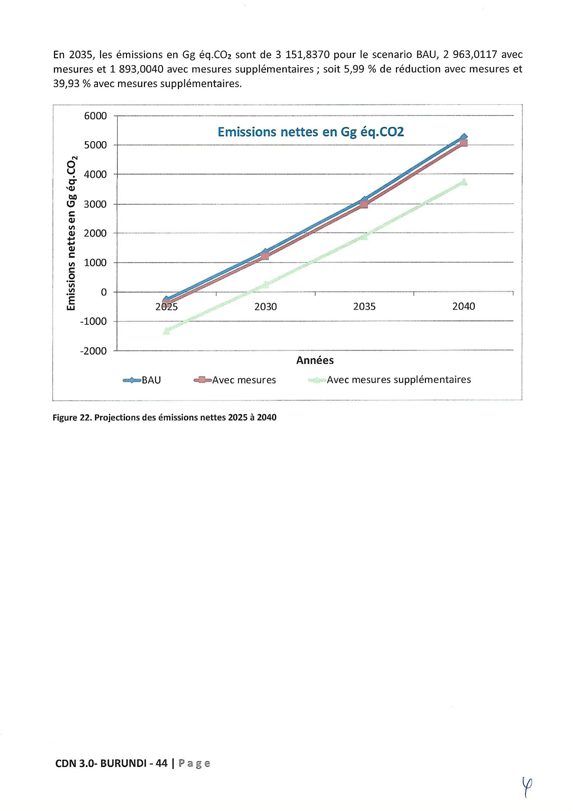
Secteurs |
Scénario |
2025 |
2030 |
2035 |
2040 |
ENERGIE |
BAU (Gg éq.CO₂) |
1 334,8290 |
1 651,3990 |
2 043,0470 |
2 527,5790 |
Avec mesures (Gg éq.CO₂) |
1 294,7840 |
1 601,8570 |
1 981,7550 |
2 451,7510 |
|
Avec mesures supplémentaires (Gg éq.CO₂) |
1 067,8630 |
1 321,1190 |
1 634,4370 |
2 022,0630 |
|
FAT |
BAU (Gg éq.CO₂) |
-2 791,9310 |
-2 094,4160 |
-1 571,1630 |
-1 178,6350 |
Avec mesures (Gg éq.CO₂) |
-2 875,6880 |
-2 157,2480 |
-1 618,2970 |
-1 213,9940 |
|
Avec mesures supplémentaires (Gg éq.CO₂) |
-3 350,3170 |
-2 513,2990 |
-1 885,3950 |
-1 414,3620 |
|
AGRICULTURE |
BAU (Gg éq.CO₂) |
2 088,0900 |
2 903,8930 |
4 038,4250 |
5 616,2120 |
Avec mesures (Gg éq.CO₂) |
2 025,4470 |
2 816,7760 |
3 917,2730 |
5 447,7260 |
|
Avec mesures supplémentaires (Gg éq.CO₂) |
1 670,4720 |
2 323,1140 |
3 230,7400 |
4 492,9700 |
|
PIUP |
BAU (Gg éq.CO₂) |
55,4530 |
75,6510 |
103,2040 |
140,7930 |
Avec mesures (Gg éq.CO₂) |
53,7900 |
73,3810 |
100,1080 |
136,5690 |
|
Avec mesures supplémentaires (Gg éq.CO₂) |
44,3630 |
60,5200 |
82,5630 |
112,6340 |
|
DECHETS |
BAU (Gg éq.CO₂) |
401,6730 |
483,2400 |
581,3700 |
699,4270 |
Avec mesures (Gg éq.CO₂) |
389,6230 |
468,7420 |
563,9290 |
678,4440 |
|
Avec mesures supplémentaires (Gg éq.CO₂) |
321,3380 |
386,5920 |
465,0960 |
559,5420 |
Source : Synthèse faite à partir des données des inventaires de gaz à effet de serre.
Secteur |
Mesures d'atténuation |
Energie (12 mesures) |
|
Agriculture (3 mesures) |
|
FAT (8 mesures) |
|
PIUP (1 mesure) |
|
Déchets (2 mesures) |
|
Source : Synthèse des auteurs
Le Burundi est fortement exposé aux aléas climatiques qui affectent tous les secteurs vitaux de l'économie nationale. La CDN 3.0 réaffirme l'engagement du Burundi à intégrer l'adaptation au cœur de la planification du développement. Les priorités d'adaptation sont alignées sur le Plan National d'Adaptation (PNA) initial de 2023 et les stratégies sectorielles.
Secteur |
Impacts du changement climatique |
Mesures d'adaptation |
Agriculture, Elevage et Pêche |
Baisse des rendements agricoles, perturbation des saisons agricoles, réduction des ressources halieutiques, prolifération des espèces envahissantes, mort du bétail, augmentation des maladies animales et végétales, déplacement des populations agricoles. |
|
Ressources naturelles, écosystèmes, forêts et mines |
Déforestation accélérée, dégradation des écosystèmes forestiers et aquatiques, perte de biodiversité, érosion des sols, réduction des services écosystémiques, tarissement des sources d'eau. |
|
Ressources en eau |
Réduction de la disponibilité en eau, contamination des ressources en eau, inondations et sécheresses plus fréquentes, perturbation des cycles hydrologiques, détérioration de la qualité de l'eau. |
|
Santé |
Augmentation des maladies vectorielles (paludisme, dengue), prolifération des épidémies (choléra, diarrhées), malnutrition liée aux perturbations agricoles, impacts sur la santé mentale des populations déplacées. |
|
Energie |
Réduction de la production hydroélectrique en cas de sécheresse, endommagement des infrastructures énergétiques lors des inondations, vulnérabilité de l'approvisionnement en biomasse. |
|
Infrastructures et transports |
Dégradation accélérée des routes et des bâtiments, destructions causées par les inondations et les glissements de terrain, vulnérabilité des infrastructures côtières et lacustres, perturbation des transports. |
|
Déchets |
Prolifération des maladies liées aux déchets mal gérés en période de pluies intenses, contamination des eaux par les lixiviats, impact des inondations sur les sites de décharge. |
|
Les populations déplacées internes (PDI) constituent une catégorie particulièrement vulnérable face aux impacts du changement climatique. En juillet 2025, le Burundi comptait 89 114 PDI, dont 92 % en raison des catastrophes naturelles liées au changement climatique, 35 % d'enfants et 56 % de femmes et de filles.5
Secteur prioritaire |
Actions prioritaires |
Agriculture, Élevage et Pêche |
|
Ressources en eau |
|
Ressources naturelles et forêts |
|
Santé |
|
Énergie |
|
Infrastructures et transports |
|
La CDN 3.0 intègre pleinement les questions de genre, de jeunesse, de droits des personnes vivant avec handicap et des peuples autochtones dans la planification et la mise en œuvre des mesures climatiques. Les femmes, qui représentent la majorité des acteurs agricoles, sont particulièrement vulnérables aux impacts du changement climatique et doivent être au cœur des stratégies d'adaptation et d'atténuation. Les mesures incluent :
Le changement climatique est l'un des principaux facteurs de déplacement de populations au Burundi. En juillet 2025, le pays comptait 89 114 personnes déplacées internes (PDI), dont 92 % en raison des catastrophes naturelles liées au changement climatique, 35 % d'enfants et 56 % de femmes et de filles.5 La CDN 3.0 prend en compte la Déclaration ministérielle de Kampala sur la migration, l'environnement et le changement climatique (KDMECC) et intègre des mesures spécifiques pour :
La CDN 3.0 reconnaît le lien entre la croissance démographique et les défis climatiques. L'intégration du planning familial dans les stratégies de réponse au changement climatique vise à :
Le Programme National d'Alimentation Scolaire (PNAS) est un levier stratégique triple pour la CDN 3.0 : il contribue simultanément à l'adaptation (sécurité alimentaire et résilience des ménages), à l'atténuation (réduction du gaspillage du bois et de la dégradation des écosystèmes forestiers par l'utilisation de foyers améliorés et propres), et au capital humain (nutrition, éducation et égalité des genres).
Le PNAS vise à assurer une alimentation nutritive et régulière aux élèves des écoles primaires et secondaires, en priorité dans les zones les plus vulnérables aux impacts du changement climatique. Il contribue à maintenir les enfants, notamment les filles, à l'école en périodes de stress climatique et de crise alimentaire.
Le PNAS s'inscrit dans la stratégie d'adaptation climatique en améliorant la résilience alimentaire des ménages ruraux, en stimulant la production agricole locale résiliente, et en développant des marchés locaux pour les produits agricoles.
La préparation des repas scolaires avec des foyers améliorés et des combustibles propres (biogaz, briquettes, électricité) réduit la consommation de bois de chauffe et les émissions de GES associées, tout en préservant les forêts.
Le PNAS sera développé en lien avec l'engagement accru des jeunes aux actions climatiques et bénéficiera de financements nationaux et internationaux, notamment dans le cadre des mécanismes climatiques (FVC, Fonds d'Adaptation) et des partenariats avec les organisations internationales (PAM, UNICEF, FAO).
Secteur / Mesure |
Origine interne (OI) |
Origine conditionnelle (OC) |
Total |
Énergie (9 actions) |
95 604 |
4 001 468 |
4 097 072 |
Secteur / Mesure |
Origine interne (OI) |
Origine conditionnelle (OC) |
Total |
PIUP (1 action) |
78 |
1 484 |
1 562 |
Secteur / Mesure |
Origine interne (OI) |
Origine conditionnelle (OC) |
Total |
Agriculture (1 action) |
19 |
368 |
387 |
Secteur / Mesure |
Origine interne (OI) |
Origine conditionnelle (OC) |
Total |
FAT (5 actions) |
30 301 |
276 780 |
307 081 |
Secteur / Mesure |
Origine interne (OI) |
Origine conditionnelle (OC) |
Total |
Déchets (2 actions) |
695 |
13 205 |
13 900 |
Total Atténuation : OI = 126 697 ; OC = 4 293 305 ; Total = 4 420 002 (en milliers USD)
Secteur / Mesure |
Origine interne (OI) |
Origine conditionnelle (OC) |
Total |
Agriculture et élevage (13 actions) |
12 378 |
44 948 |
57 326 |
Secteur / Mesure |
Origine interne (OI) |
Origine conditionnelle (OC) |
Total |
Santé (1 action) |
640 |
12 163 |
12 803 |
Secteur / Mesure |
Origine interne (OI) |
Origine conditionnelle (OC) |
Total |
Infrastructures (4 actions) |
3 566 |
67 755 |
71 321 |
Secteur / Mesure |
Origine interne (OI) |
Origine conditionnelle (OC) |
Total |
Déchets (4 actions) |
3 773 |
70 841 |
74 614 |
Secteur / Mesure |
Origine interne (OI) |
Origine conditionnelle (OC) |
Total |
Ressources en eau (4 actions) |
320 551 |
2 102 752 |
2 423 303 |
Secteur / Mesure |
Origine interne (OI) |
Origine conditionnelle (OC) |
Total |
Énergie adaptation (5 actions) |
32 185 |
611 515 |
643 700 |
Secteur / Mesure |
Origine interne (OI) |
Origine conditionnelle (OC) |
Total |
Priorités transversales (6 actions) |
33 042 |
627 802 |
660 844 |
Total Adaptation : OI = 406 135 ; OC = 3 537 776 ; Total = 3 943 911 (en milliers USD)
GRAND TOTAL CDN 3.0 : 8 363 913 000 USD
Le Burundi mobilisera ses ressources nationales pour financer la mise en œuvre de la CDN 3.0, notamment à travers le budget national, les taxes environnementales, les contributions en nature des communautés locales et les mécanismes innovants de financement domestique. Le gouvernement s'engage à augmenter progressivement les allocations budgétaires pour les actions climatiques.
Le financement extérieur est indispensable pour la mise en œuvre des mesures conditionnelles de la CDN 3.0. Les principales sources de financement extérieur comprennent : le Fonds Vert pour le Climat (FVC/GCF), le Fonds pour l'Environnement Mondial (FEM/GEF), le Fonds d'Adaptation, le Fonds Pertes et Dommages, la Banque Africaine de Développement (BAD), la Banque Mondiale (BM), la Banque Européenne d'Investissement (BEI), l'Union Européenne, la coopération bilatérale (KfW, PNUD, etc.) et les mécanismes de marché carbone.
Le Burundi entend mobiliser des financements à travers les mécanismes de marchés carbone, notamment dans le cadre de l'Article 6 de l'Accord de Paris. Le secteur forestier (REDD+) offre des opportunités significatives pour la génération de crédits carbone. Le pays développera les cadres réglementaires nécessaires pour participer aux marchés carbone volontaires et régulés.
Les partenariats public-privé constituent un levier important pour mobiliser des investissements climatiques, notamment dans les secteurs de l'énergie renouvelable, des infrastructures résilientes et de l'agriculture durable. Le cadre légal sera renforcé pour faciliter l'engagement du secteur privé dans la mise en œuvre de la CDN 3.0.
La mise en œuvre de la CDN 3.0 nécessite un renforcement significatif des capacités institutionnelles, techniques et humaines. Les besoins prioritaires comprennent : la formation des techniciens et experts nationaux, le renforcement des institutions nationales (MINEAGRIE, OBPE, IGEBU, INSBU), l'accès aux technologies propres et innovantes, et la mise en place de systèmes d'information climatique performants.
Le système national MRV (Mesure, Notification, Vérification) est renforcé pour assurer le suivi de la mise en œuvre des mesures d'atténuation (GES) et d'adaptation (indicateurs de résilience). Ce système s'inscrit dans le Cadre de Transparence Renforcé (CTR) de l'Accord de Paris et permettra de produire les rapports biennaux de transparence (BTR) et les communications nationales.
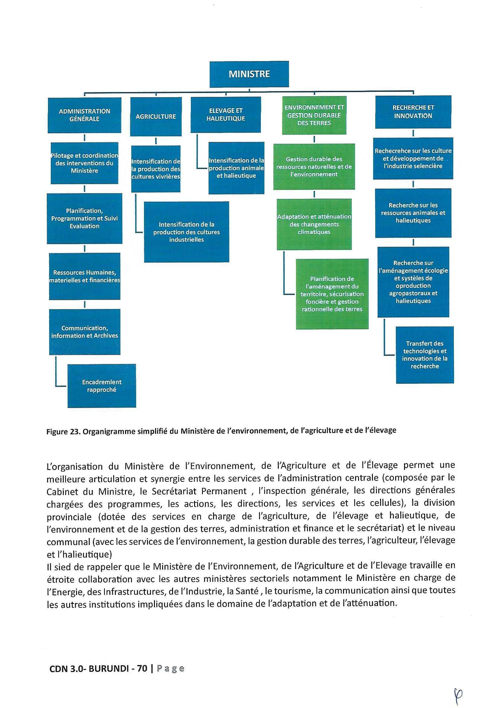
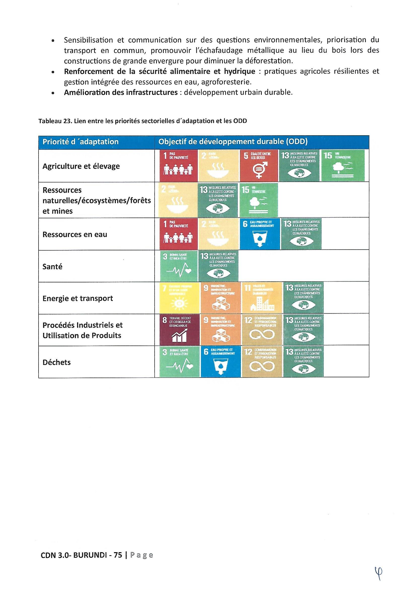
La CDN 3.0 du Burundi contribue directement à la réalisation des Objectifs de Développement Durable (ODD), notamment :
La CDN 3.0 est pleinement alignée sur les principales stratégies et politiques nationales de développement du Burundi :
La CDN 3.0 du Burundi représente un engagement ferme et ambitieux du pays à contribuer à l'effort mondial de lutte contre le changement climatique, malgré ses faibles émissions de GES et ses ressources limitées. Elle traduit la volonté du Burundi de poursuivre une trajectoire de développement bas-carbone et résiliente, en cohérence avec ses priorités nationales et les objectifs de l'Accord de Paris.
La mise en œuvre réussie de la CDN 3.0 dépend de plusieurs conditions essentielles : la mobilisation des financements nationaux et internationaux, le renforcement des capacités institutionnelles et techniques, la mise en place d'un système MRV performant, et l'engagement de toutes les parties prenantes (gouvernement, secteur privé, société civile, communautés locales, partenaires internationaux).
Le Burundi appelle la communauté internationale à soutenir ses efforts de mise en œuvre à travers des financements climatiques adéquats, le transfert de technologies et le renforcement des capacités. Avec un soutien approprié, le Burundi pourra atteindre ses objectifs d'atténuation et d'adaptation, contribuant ainsi à la réalisation des objectifs mondiaux de l'Accord de Paris et des ODD.
La CDN 3.0 constitue ainsi non seulement un engagement climatique, mais aussi une feuille de route pour un développement durable, inclusif et résilient au Burundi, plaçant l'humain au cœur des solutions climatiques.
Cette annexe présente les principaux documents et références utilisés dans l'élaboration de la CDN 3.0 du Burundi, notamment les rapports d'inventaires nationaux de GES, les communications nationales, le Premier Rapport Biennal de Transparence (BTR 2025), le Plan National d'Adaptation initial (2023), les stratégies sectorielles, les études et publications scientifiques sur le changement climatique au Burundi.
Cette annexe présente les consultants nationaux et les institutions qui ont contribué à l'élaboration de la CDN 3.0 du Burundi, sous la coordination du Ministère de l'Environnement, de l'Agriculture et de l'Élevage (MINEAGRIE).
Le cadre juridique national comprend les textes suivants :
Cette annexe présente les axes stratégiques du plan national pour la mise en œuvre de la CDN 3.0.
Cet axe vise à renforcer les capacités institutionnelles pour une gouvernance climatique efficace. Les principaux objectifs comprennent :
Résultats attendus : des institutions nationales dotées des capacités nécessaires pour planifier, mettre en œuvre, suivre et évaluer les actions climatiques.
Cet axe vise à garantir la qualité et l'efficacité de la mise en œuvre des mesures d'atténuation et d'adaptation. Il comprend :
Cet axe porte sur la réduction des risques de catastrophes liées au climat. Les objectifs incluent :
Cet axe vise à promouvoir l'innovation et l'accès aux technologies climatiques. Il comprend :
Cet axe vise à développer les capacités humaines et institutionnelles pour la mise en œuvre de la CDN 3.0. Les priorités comprennent :
Cet axe porte sur la gestion des informations climatiques et la communication. Il comprend :
Cet axe transversal vise à garantir l'inclusion et l'équité dans la réponse climatique. Il comprend :
Cet axe vise à mobiliser les ressources nécessaires à la mise en œuvre de la CDN 3.0. Il comprend :
Cet axe porte sur la réduction des émissions dues à la déforestation et à la dégradation des forêts. Il comprend :
Cet axe vise à protéger les terres agricoles et les ressources en eau à travers la lutte contre l'érosion. Il comprend :
Le programme COMPACT (Compact with Africa) représente un ensemble de projets d'investissement dans le secteur de l'énergie au Burundi, visant à accélérer l'accès à l'électricité et la transition énergétique.6
Projet |
Description |
Jiji/Mulembwe |
Centrale hydroélectrique sur les rivières Jiji et Mulembwe pour augmenter la production nationale d'électricité. |
Kirasa |
Centrale hydroélectrique de Kirasa contribuant à l'augmentation de la capacité de production. |
Mpanda |
Centrale hydroélectrique de Mpanda pour renforcer le réseau national d'électricité. |
Dama/Sigu |
Centrale hydroélectrique sur les rivières Dama et Sigu. |
Ruvyironza/Mulembwe |
Centrale hydroélectrique sur les rivières Ruvyironza et Mulembwe. |
Projet |
Description |
Ruzizi III |
Centrale hydroélectrique régionale sur la rivière Ruzizi, projet d'interconnexion régionale entre le Burundi, la RDC et le Rwanda. |
Accès Énergie Phase 1 |
Extension du réseau de distribution électrique pour améliorer l'accès à l'électricité dans les zones périurbaines et rurales. |
Projet ASCENT Burundi |
Projet d'accès à l'électricité dans les zones rurales et périurbaines. |
Accès Énergie Phase 2 |
Deuxième phase d'extension du réseau électrique pour augmenter le taux d'électrification. |
Électrification de Kirundo |
Projet d'électrification de la région de Kirundo pour améliorer l'accès à l'énergie dans cette zone. |
Interconnexion régionale |
Projet d'interconnexion des réseaux électriques régionaux pour améliorer la stabilité et la fiabilité de l'approvisionnement en électricité. |
Projet |
Description |
Énergie solaire communautés locales |
Développement de mini-réseaux et systèmes solaires autonomes pour l'électrification des communautés rurales éloignées du réseau national. |
Projet |
Description |
PNUD/FEM Électrification rurale |
Programme d'assistance technique pour l'électrification rurale durable financé par le PNUD et le Fonds pour l'Environnement Mondial. |
BAD ALSF (négociation PPP) |
Assistance technique de la Banque Africaine de Développement (Africa Legal Support Facility) pour la négociation des partenariats public-privé dans le secteur énergétique. |
BAD ALSF (vérification PPP) |
Assistance technique pour la vérification et la validation des accords de PPP dans le secteur de l'énergie. |
Formation ONUDI |
Programme de formation et de renforcement des capacités en partenariat avec l'Organisation des Nations Unies pour le Développement Industriel (ONUDI). |
Élaboration cadre légal UE |
Assistance technique de l'Union Européenne pour l'élaboration du cadre légal et réglementaire du secteur énergétique. |
Appui Technique BM |
Assistance technique de la Banque Mondiale pour le développement du secteur énergétique et l'amélioration de l'accès à l'électricité. |